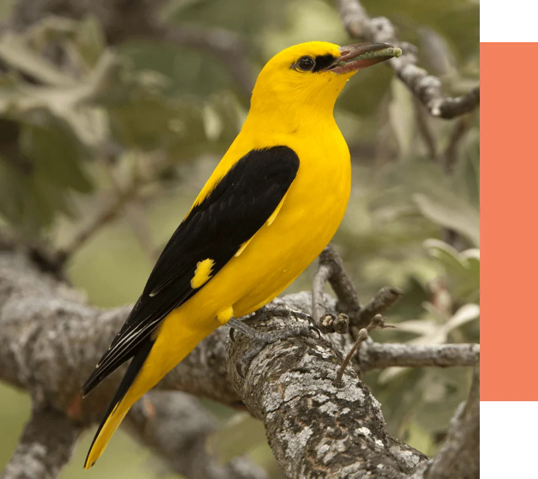

Gil (Pyrrhula pyrrhula) – gatunek małego ptaka z rodziny łuszczakowatych (Fringillidae), zamieszkujący Eurazję.
Dymówka, jaskółka dymówka (Hirundo rustica) – gatunek niewielkiego ptaka wędrownego z rodziny jaskółkowatych (Hirundinidae).
Śpiewak (Turdus philomelos) – gatunek średniej wielkości ptaka z rodziny drozdowatych (Turdidae), zamieszkującego Eurazję.
Szpak zwyczajny (Sturnus vulgaris) – gatunek średniej wielkości ptaka z rodziny szpakowatych (Sturnidae). Częściowo wędrowny.
Pierwotnie zamieszkiwał wyłącznie Eurazję. Nie jest zagrożony wyginięciem.

Wilga zwyczajna (Oriolus oriolus) – gatunek średniej wielkości wędrownego ptaka wróblowego z rodziny wilgowatych (Oriolidae),
jedyny z tej rodziny rozmnażający się w północnej strefie umiarkowanej. Nie jest zagrożony wyginięciem, populacja uznawana jest za stabilną.